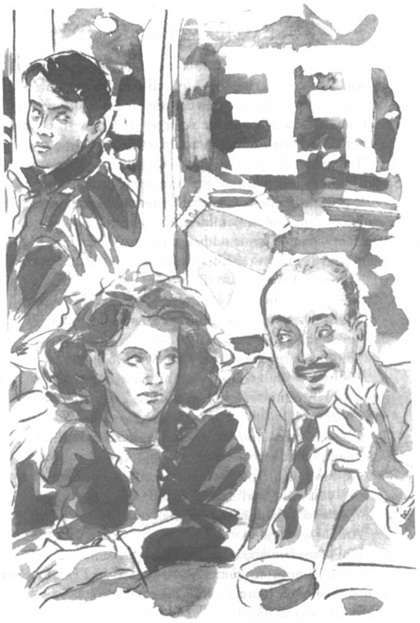

Listen to Part 1:
Ngày sau khi đến căn hộ của Rita, Tom gặp Danny lúc ăn trưa. Họ đến The Burger Palace ở bên kia đường, đối diện thư viện. Danny đói. Anh ta gọi một chiếc cheeseburger và khoai tây chiên. Sau đó anh ta lại gọi một phần bánh táo to với kem. Tom chỉ gọi một tách trà.
‘Mình biết làm gì đây, Danny?’ Tom hỏi. ‘Làm sao để mình có thể tìm ra Rita? Mình không biết hiện giờ cô ấy đang sống ở đâu.’
‘Sẽ khó cho cậu tìm thấy cô ấy đây,’ Danny nói. ‘Cậu có quen bạn bè nào của cô ấy không?’
‘Không,’ Tom nói.
Danny ăn xong bánh táo. Anh ta suy nghĩ rất kỹ.
‘Có một cách này cậu có thể làm,’ anh ta nói, ‘hãy nghĩ về mấy nơi mà Rita thích đến. Quay lại những địa điểm hai người từng đến. Đó là cơ hội duy nhất của cậu.’
Tom cảm ơn Danny vì đã giúp đỡ và quay lại làm việc. Giờ đã là tháng 12 và thời tiết thì lạnh. Thư viện có nhiều người đến hơn vì bên trong ấm áp. Nhiều người già thích tới đó ngồi đọc báo. Thỉnh thoảng họ lại ngủ gật.
Khi thư viện đóng cửa vào buổi tối, Tom đi tìm Rita. Bên ngoài trời tối nhưng ở đâu cũng có đèn Giáng sinh và đồ trang trí. Trong cửa sổ các cửa hàng treo những tấm biển: MERRY CHRISTMAS TO ALL OUR CUSTOMERS (GIÁNG SINH VUI VẺ ĐẾN TẤT CẢ KHÁCH HÀNG).
Tom quay lại công viên nơi anh ta đã chụp ảnh Rita. Nhưng công viên đã đóng cửa.
Đêm hôm đó rất lạnh. Tom bước đi thật nhanh để giữ ấm. Anh ta đi qua Cao đẳng Silverton và thấy một nhóm sinh viên đang cười nói vui vẻ. Một tấm poster có ghi: SILVERTON COLLEGE CHRISTMAS PARTY TONIGHT. ALL STUDENTS WELCOME (TIỆC GIÁNG SINH CỦA CAO ĐẲNG SILVERTON TỐI NAY. TOÀN THỂ SINH VIÊN ĐƯỢC CHÀO ĐÓN).
Listen to Part 2:
Tom đi qua cầu đường ray và đến Scrapley. Đây là khu ổ chuột của thành phố, nhưng Tom chẳng quan tâm. Anh ta phải tìm ra Rita.
Tom đến quán cà phê Big John. Ánh đèn rọi sáng từ trong cửa sổ. Quán cà phê trông ấm áp từ bên trong. Tom mở cửa bước vào.
Quán cà phê nhỏ chật kín người. Ca khúc Smooth Operator lại vang lên từ máy hát tự động. Rita và ông Spooner đang ngồi ở một góc. Rita và ông Spooner không thấy Tom. Ông Spooner đang nói rất nhanh. Cánh tay ông ta vòng qua vai Rita.
‘Em có một tương lai tuyệt vời,’ ông ta nói. ‘Hôm nay em chỉ là một cô gái nghèo ở Scrapley. Vài năm nữa em sẽ có một ngôi nhà rộng lớn và . . .’
Tom quay người bước ra khỏi quán Big John. Bên ngoài trời lạnh nhưng mặt anh ta lại nóng bừng. Mắt anh ta cay cay.
‘Rita và Spooner!’ anh ta hét lên tức giận. ‘Rita đã nói dối tôi! Cô ta lừa tôi! Cô ta chỉ muốn nhờ tôi giúp để trở thành người mẫu. Cô ta chưa từng thích tôi!’

‘Em có một tương lai tuyệt vời,’ Sfiooner nói.